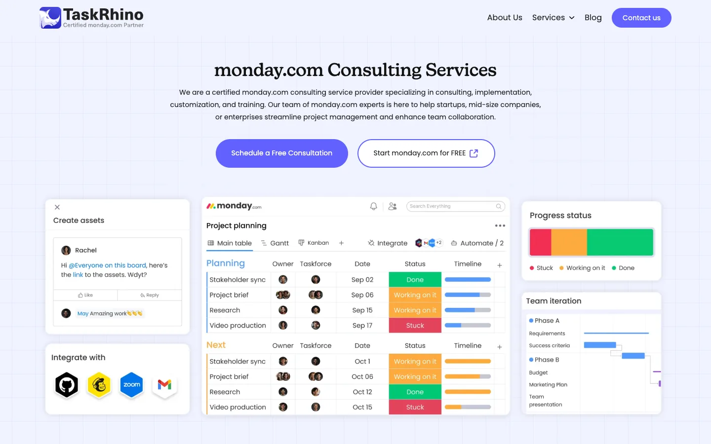
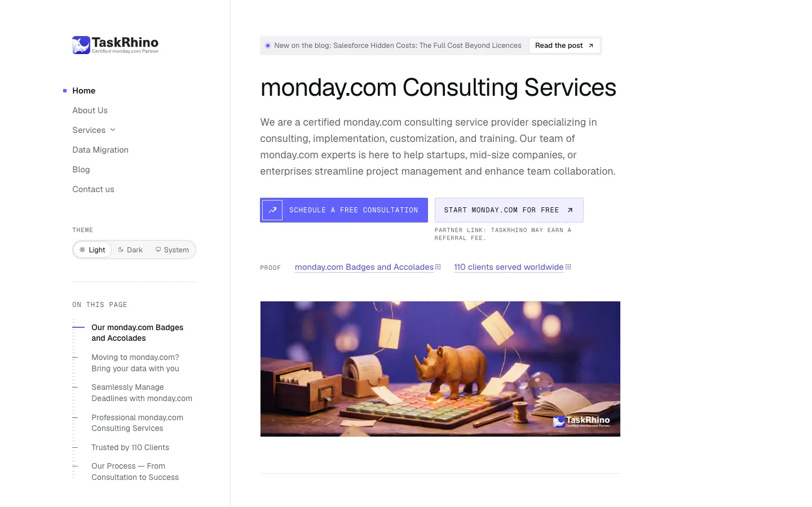

taskrhino.ca: from WordPress to Astro, edited with Markstage
taskrhino.ca is the services site and blog of Space-O Technologies, and the first site Markstage was built for. It moved off WordPress to a static Astro site in October 2026, and its writers now edit it with Markstage, on the real page.




- Speed score, home page on a phone
- from 71 to 99
- Main content shown (LCP), on a phone
- from 6.8 s to 2.2 s
- Home page weight, on a phone
- from 902 KB to 206 KB
- Files loaded, home page on a phone
- from 45 to 19
What moved
- 158 posts, 20 pages and 2,414 images and files came across from WordPress, with every address kept and the search titles and descriptions carried over. After the move, all 179 addresses of the old site answered.
- Posts are Markdown files and pages are JSON files in the site's git repo. There is no content database.
- The live site is static. Markstage is only there while someone edits; the pages visitors get are plain HTML, CSS and pictures.
How the writers work now
Writers open a page in Markstage and change it where it appears, on the site's own design. Each save is a commit in their name, and changes go live through releases, with roles for who may publish what, and staging next to production. The services pages, which are JSON, are edited on the rendered page too, with each section's fields in a side panel.
The numbers
Lighthouse, median of three runs, measured on 28 and 29 October 2026. The old site was measured live; the new site was measured from its build served on our own computer, so its load times are not those of a real host.
| Page | Form | Before: speed | After: speed | Before: weight | After: weight | Before: files | After: files |
|---|---|---|---|---|---|---|---|
| Home | phone | 71 | 99 | 902 KB | 206 KB | 45 | 19 |
| Home | desktop | 98 | 100 | 1067 KB | 173 KB | 53 | 19 |
| Contact | phone | 72 | 100 | 798 KB | 140 KB | 44 | 16 |
| A services page | phone | 70 | 99 | 877 KB | 192 KB | 46 | 20 |
| A blog post | phone | 66 | 99 | 781 KB | 149 KB | 33 | 18 |
Accessibility scored 100 on every page measured after the move, against 87 to 96 before.
What the screenshots are
All screenshots on this page were taken on 28 and 29 October 2026, before the new site went live: the old one from the live WordPress site, read only, and the new one from its own build. The live site has changed since, as sites do.


Get it on GitHubWhy we built Markstage
Space-O Technologies made Markstage. Built a site with it? Tell us at rp@spaceo.ca